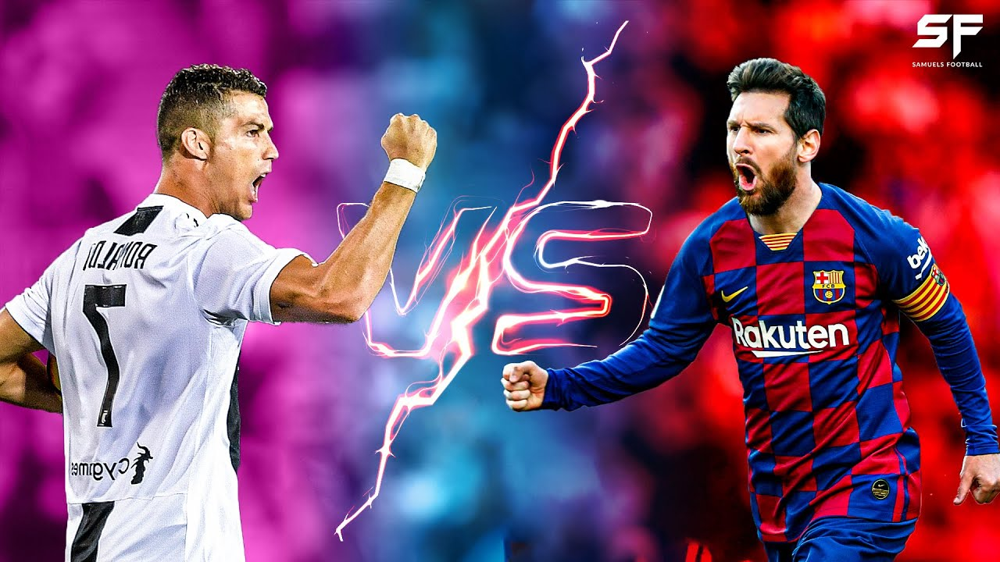
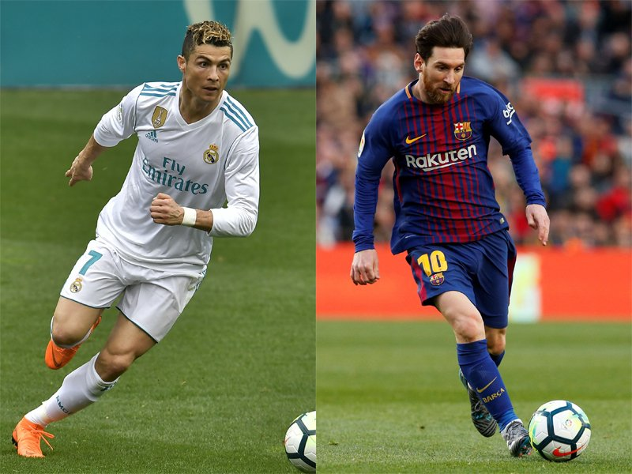

Lionel Messi Vs Cristiano Ronaldo
This visualization presents a comparative analysis of Lionel Messi's and Cristiano Ronaldo's performance in La Liga, national teams,total goals and overall stats.
These two player have been dominating the world of football for more than a decade, breaking records and setting new benchmarks with their incredible skills and talent.
They have won numerous awards, titles, and accolades, and their rivalry on the pitch has captivated fans around the globe.
this visualization provides an objective and reliable source of information for assessing the performances of these two iconic footballers.

Comparing Lionel Messi and Cristiano Ronaldo's Overall performance
Based on the overall performance data, it can be seen that both Lionel Messi and Cristiano Ronaldo have exceptional goal-scoring abilities,
with Ronaldo slightly ahead in terms of total goals. Messi, on the other hand, has more assists, demonstrating his ability to create scoring opportunities for his teammates.
In terms of specific skills, Messi has a significant advantage when it comes to left-footed shots, successful dribbles, and being named Man of the Match. Ronaldo, on the other hand,
is a more balanced player with a greater proficiency in right-footed shots and scoring penalties. Ronaldo also has a higher number of headers, indicating his aerial ability. Additionally,
both players are very effective in scoring free kicks, but Messi has a slightly higher number of goals in this category.
Comparing Lionel Messi and Cristiano Ronaldo's performance in La Liga.
Based on the chart , Messi and Ronaldo have different strengths and weaknesses in different positions on the field.
Messi has scored more goals, made more assists, and had more appearances overall than Ronaldo. However, Ronaldo has scored more penalties and
more goals with his right foot. Messi has had more success with his left foot and in making key passes and successful dribbles. Both players
have had success inside the penalty box, but Ronaldo has had more success outside the penalty box with free kick goals and goals with his head.
It is important to note that these statistics do not provide a complete picture of the players' skills and abilities, as there are many other factors.
that contribute to success on the field.
Comparing Lionel Messi and Cristiano Ronaldo's National Team Performance

Based on the data, we can see that Cristiano Ronaldo has scored more goals than Lionel Messi for their national teams.
Ronaldo has also played more appearances and scored more hat-tricks. However, Messi has made more assists and scored more goals outside the box with his left foot,
while Ronaldo has scored more goals inside the box and with his right foot. Ronaldo also has a stronger header, having scored 28 goals with his head compared to Messi's 2.
Overall, both players have their strengths and weaknesses in different positions on the field for their national teams.
Comparing Lionel Messi and Cristiano Ronaldo's Overall performance
Based on the overall performance data, it can be seen that both Lionel Messi and Cristiano Ronaldo have exceptional goal-scoring abilities,
with Ronaldo slightly ahead in terms of total goals. Messi, on the other hand, has more assists, demonstrating his ability to create scoring opportunities for his teammates.
Both players have a high number of appearances, indicating their consistency in performing at the highest level.